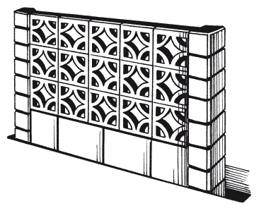

Подпорные стенки.

Помимо забора, часто возводят подпорные и ограждающие стены. Подпорные стенки – важный функциональный и декоративный элемент ландшафтного дизайна.
Очень эффектно смотрятся подпорные стенки из натурального камня рядом с хвойными кустарниками, почво-покровными растениями. Хорошо возводить ажурные стенки рядом со струящимся ручейком или возле альпинариев, представляющих собой скалистые уступы.
Главное, чтобы территория участка с застройками была решена в единой стилистической манере. Построить подпорную стенку нетрудно, следует только детально разработать проект и правильно подобрать строительные материалы.
Декоративно смотрится кирпичная стена. Кирпичи укладывают перевязкой. Это значит, что вертикальные швы в одном ряду не должны совпадать со швами в соседних с ним верхним и нижнем рядах. Подпорную стенку, возведенную из кирпича, можно облицевать специальной плиткой, натуральным или искусственным камнем. Стены из натурального камня привлекательны и разнообразны. Для работы подойдут самые разные породы камня – известняк, песчаник, плитняк, сланец, гранит, гнейс, порфир, доломит, валуны или речная галька и т. д. Также можно использовать монолитный бетон.
К бетонной стене пристреливают металлическую сетку, а затем облицовывают ее натуральным или искусственным камнем. Если применять бетонные блоки, то стоимость подпорной стены значительно снизится, а процесс ее возведения облегчится. Бетонные блоки могут быть изготовлены со сквозными отверстиями, отлиты в виде различных узоров. Их используют для стен-ширм и укладывают один на другой без перевязки вертикальных швов (рис. 39).

Для фундамента необходимы песок, гравий или щебень, бетонная плита. Во избежание «выверта» их грунтом каменные подпорные стенки, как правило, делают массивными (чем выше стана, тем она должна быть массивнее).
Стена из монолитного бетона (железобетона)Перед ее возведением устраивают песчаное (или песчано-гравийное) основание, утрамбовывают его, а затем укладывают на него бетонную или железобетонную плиту. По ширине она должна быть равна ширине подпорной стенки (можно сделать ее немного больше). Плиту можно сделать самому из монолитного бетона. Вдоль и поперек укладывают арматуру – стержни, проволоку.
Используют их для того, чтобы в случае неравномерной нагрузки (или некачественно выполненного основания) плита не треснула. Снизу и сверху арматура должна иметь двухсантиметровый слой бетона.
Затем устраивают опалубку из досок, плотной фанеры, древесностружечной плиты, листов металла или шифера. Стенку бетонируют. При марке цемента 400 готовят раствор из цемента, песка и щебня в соотношении компонентов по объему 1: 3: 4. Песок и щебень должны быть по возможности чистыми, без глинистых примесей. 1 % загрязненности требует увеличения расхода цемента на 1 %. Если марка цемента ниже 400, то его берут больше.
Качество бетона во многом зависит от тщательности перемешивания бетонной смеси. Особое внимание необходимо уделить отношению веса воды к массе цемента. Чем меньше это водоцементное соотношение, тем более жесткой будет бетонная смесь, а значит, и прочнее получается бетон. Теоретически это отношение равно 0,4, однако на практике с учетом влажности песка и щебня его доводят до 0,7. Толщина подпорной стенки в среднем сечении должна составлять не менее 1/4 высоты, а ширина основания – примерно 2/3 высоты. Предпочтительно вертикальное армирование, т. к. бетон плохо работает на изгиб.
Стена из сборных железобетонных блоков и плитСтенку из сборного железобетона (бетона) можно возвести достаточно быстро, если иметь в наличии одинаковые по размерам блоки или плиты. Блоки крепят друг к другу на цементно-песчаном растворе (1: 3). Если блоки имеют разную ширину, то фасадную часть делают ровной, а неровности утапливают в грунт. Ступенчатая фасадная поверхность с нишами для цветов нежелательна, поскольку в этих случаях раствор крошится, а стенка быстро разрушается.
Ампельные растения лучше посадить в грунт за верхней кромкой стенки или в горшки, расположив их на фасаде.
Особое внимание следует обратить на тщательную гидроизоляцию внутренней части подпорной стенки – со стороны грунта. Для этого используют горячий битум или рубероид. Не стоит забывать об устройстве дренажа, который делают на уровне основания стенки из металлических или асбестоцементных труб диаметром до 10 см.
Стена из кирпича и сборных железобетонных блоков и плитПри возведении стены из кирпича, блоков и плит в основание укладывают железобетонную плиту, а на нее – кирпичи на растворе. Для приготовления раствора лучше использовать готовые сухие растворные смеси. Такие смеси продаются в расфасованном виде в различной по весу упаковке. Их достоинства: они удобны и экономичны, поскольку их состав рассчитан заранее, и требуется лишь добавить определенное количество воды.
Железобетонными блоками или плитами лучше выложить внутреннюю сторону подпорной стенки. Для этой цели можно также использовать асбестоцементные листы, расположив их внахлест. С фасадной стороны при расшивке рустов между кирпичами в еще не застывший раствор на определенном расстоянии вставляют специальные небольшие анкера (или болты). По ним в дальнейшем можно натянуть тонкую проволоку или леску, по которым пустить ампельные или вьющиеся растения. Такая декоративная стенка украсит любой участок.